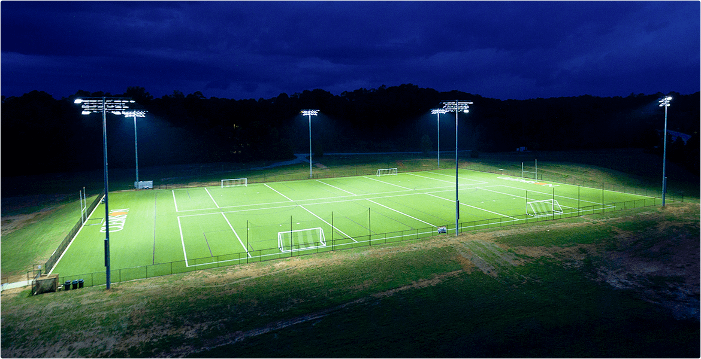

Дата публикации: 31.03.2021
Время публикации: 10:34
Просмотров: 471
В каких случаях применяют наши растворные узлы для приготовления раствора карбамида (мочевины). Чаще всего хозяйства, приобретающие у нас растворный узел, готовят в нем раствор для листовой подкормки озимых культур и одновременной обработки пестицидами. Технология следующая: загружается в премиксер карбамид, растворяется, перекачивается в основной бак, доливают бак до полного объема; далее можно загрузить гербициды, пестициды (в жидком и твердом виде) и растворить их в миксере, перекачать в основной бак; в основном баке раствор перемешивается с помощью гидромешалок — мощный насос гоняет раствор по баку;далее можно заправлять опрыскиватели.
Весь цикл приготовления раствора карбамида с пестицидами в РУ 4.5 м3 занимает в среднем 30 минут. Встроенный в растворный узел насос позволяет заправить 2х-кубовый опрыскиватель за 2 минуты. Для приготовления рабочих растворов пестицидов; для приготовления рабочего раствора КАС, смешения КАС с сульфатом аммония, пестицидами. Растворный узел позволяет быстро растворить жидкий КАС в нужном количестве воды, в точно выверенных соотношениях. При завышенной концентрации КАС возможны ожоги растений, поэтому правильная пропорция и хорошее перемешивание рабочего раствора очень важны. Часто в раствор КАС одновременно добавляют пестициды для защиты растений. Высокоточные расходометры, компьютерное оборудование, мощный премиксер и гидромешалка в основной емкости позволяют быстро приготовить качественный раствор.
Для приготовления жидких комплексных удобрений, в т.ч. близких по составу к КАС 28, КАС 30, КАС 32. Однако следует учитывать, что для приготовления чистого КАС надо выполнить ряд дополнительных условий — например, подогрев воды, которой растворяются карбамид и аммиачная селитры. Дело в том, что при обычном смешении карбамида и селитры в концентрации, необходимой для производства КАС, происходит сильное понижение температуры раствора (до -20*С и больше) и раствор кристаллизуется, «застывает». Например, чтобы приготовить раствор карбамида и селитры в пропорциях КАС 18-22 достаточно температуры воды 15-22*С. Совместное растворения карбамида и селитры в концентрациях КАС 32 — возможно при температуре воды для растворения 95*С. Это связано с двумя факторами: 1) концентрацией удобрения и соответственно с тем, насколько понижается температура — чем выше концентрация, тем сильнее понижается температура в процессе химической реакции при смешивании в воде карбамида и селитры; 2) растворы КАС в более низкой концентрацией имеют более низкую температуру кристаллизации — кристаллизация КАС-32 начинается при 0 ° С, КАС-30 – при -9 ° С, а КАС-28 – -17 ° С.
В каких случаях применяют наши растворные узлы для приготовления раствора карбамида (мочевины). Чаще всего хозяйства, приобретающие у нас растворный узел, готовят в нем раствор для листовой подкормки озимых культур и одновременной обработки пестицидами. Технология следующая: загружается в премиксер карбамид, растворяется, перекачивается в основной бак, доливают бак до полного объема; далее можно загрузить гербициды, пестициды (в жидком и твердом виде) и растворить их в миксере, перекачать в основной бак; в основном баке раствор перемешивается с помощью гидромешалок — мощный насос гоняет раствор по баку;далее можно заправлять опрыскиватели.
Весь цикл приготовления раствора карбамида с пестицидами в РУ 4.5 м3 занимает в среднем 30 минут. Встроенный в растворный узел насос позволяет заправить 2х-кубовый опрыскиватель за 2 минуты. Для приготовления рабочих растворов пестицидов; для приготовления рабочего раствора КАС, смешения КАС с сульфатом аммония, пестицидами. Растворный узел позволяет быстро растворить жидкий КАС в нужном количестве воды, в точно выверенных соотношениях. При завышенной концентрации КАС возможны ожоги растений, поэтому правильная пропорция и хорошее перемешивание рабочего раствора очень важны. Часто в раствор КАС одновременно добавляют пестициды для защиты растений. Высокоточные расходометры, компьютерное оборудование, мощный премиксер и гидромешалка в основной емкости позволяют быстро приготовить качественный раствор.
Для приготовления жидких комплексных удобрений, в т.ч. близких по составу к КАС 28, КАС 30, КАС 32. Однако следует учитывать, что для приготовления чистого КАС надо выполнить ряд дополнительных условий — например, подогрев воды, которой растворяются карбамид и аммиачная селитры. Дело в том, что при обычном смешении карбамида и селитры в концентрации, необходимой для производства КАС, происходит сильное понижение температуры раствора (до -20*С и больше) и раствор кристаллизуется, «застывает». Например, чтобы приготовить раствор карбамида и селитры в пропорциях КАС 18-22 достаточно температуры воды 15-22*С. Совместное растворения карбамида и селитры в концентрациях КАС 32 — возможно при температуре воды для растворения 95*С. Это связано с двумя факторами.
Уличные светодиодные
светильники
Уличные светодиодные
светильники
Уличные светодиодные
светильники